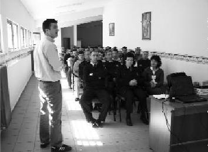

Topluluk önünde rahatça konuşabilmek, kendimi geliştirebilmek, yeni şehirleri görebilmek ve en önemlisi çok güzel dostluklar kurabilmek projenin bana kattığı küçük artılardı. İyi ki Uğur Böcekleri Projesi ile tanışmışım. Bana göre Uğur Böcekleri Projesi, güzel bir tebessüm ve gözlerdeki ışıltıdır. Yeni yerlere, yeni kişilere uğur götürmek dileğiyle… (Selami Topuz)
Selami cezaevlerine en çok giden gençlerdendi. Projenin emeklediği dönemlerde çok katkısı oldu. Sağlam karakterlidir. Tam bir Anadolu delikanlısı olarak gördüm Selami'yi. Allah yolunu açık etsin.